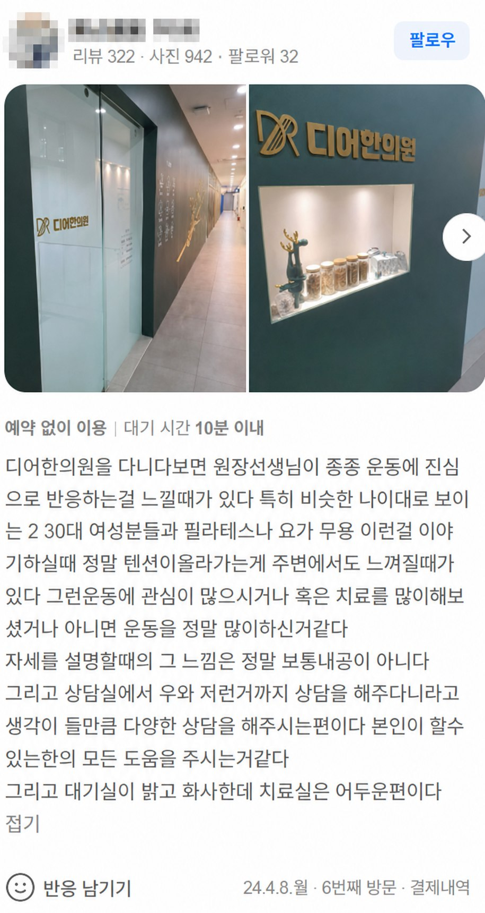
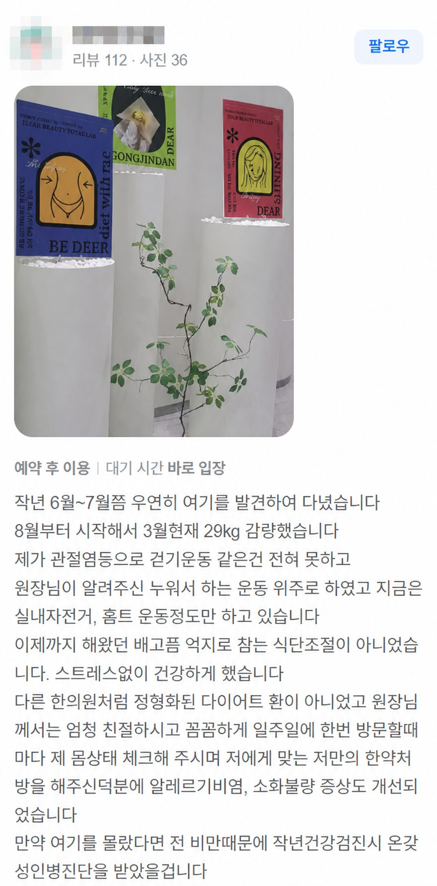
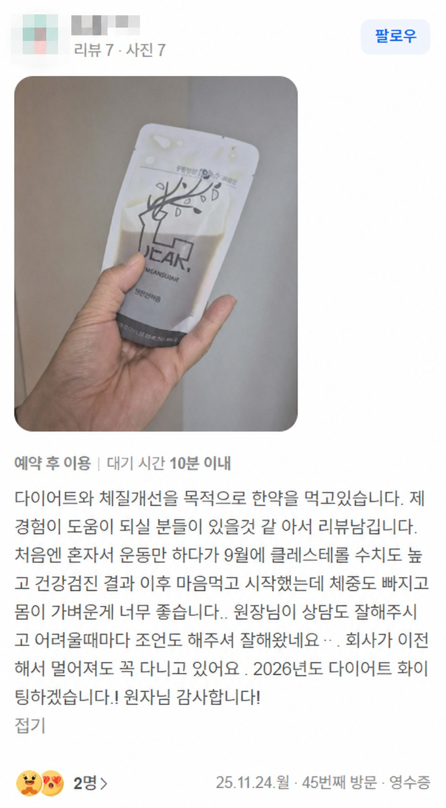
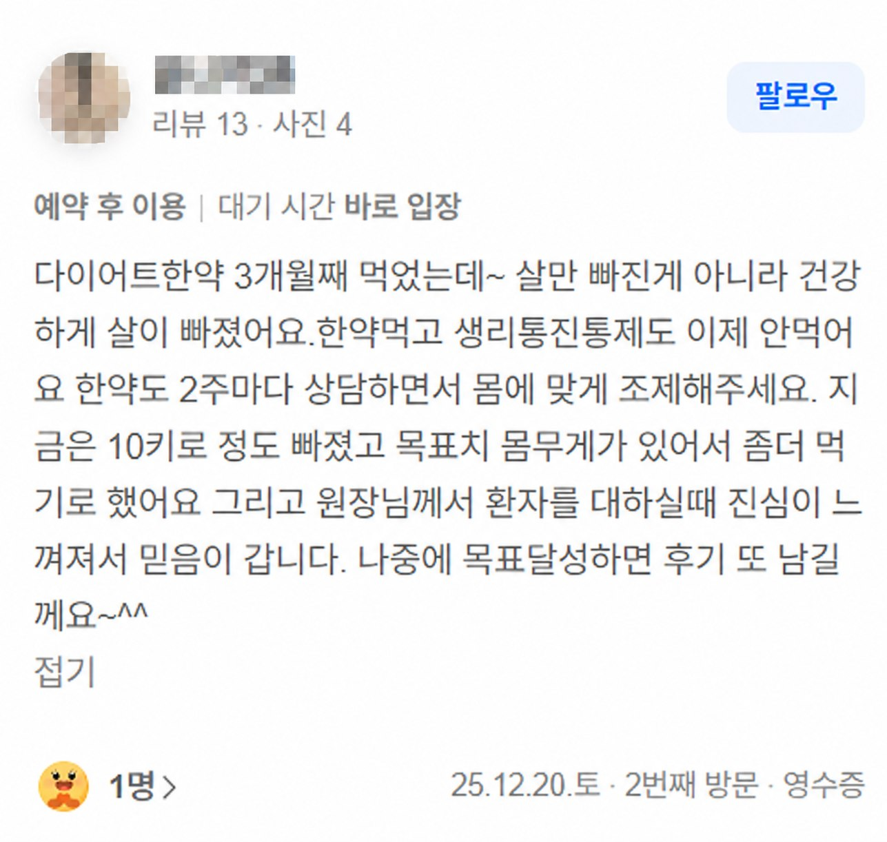
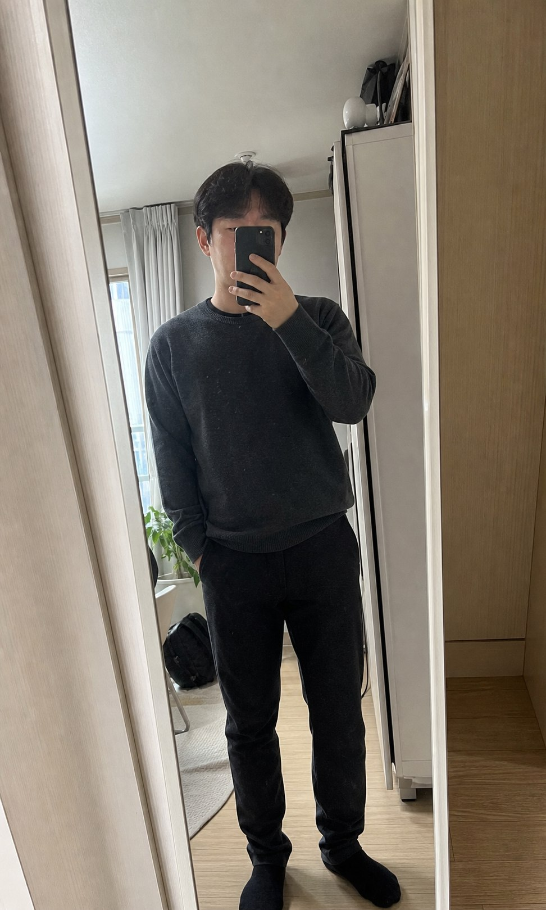
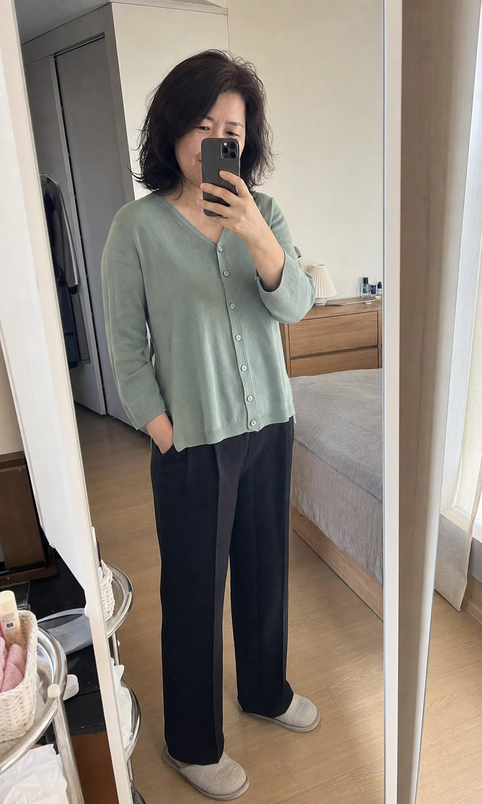

01
식욕
왜 저녁만 되면 식욕이 더 커질까요?
식사 간격과 허기 패턴, 폭식이 반복되는 시간을 함께 확인합니다.
DEAR DIET PROGRAM
식욕과 수면, 소화와 부종, 배변과 생활 리듬까지.
현재 상태를 함께 살펴 체중관리의 방향을 정합니다.
A DIFFERENT BEGINNING
의지가 부족해서라고
단정하기 전에,
지금의 몸과 생활을
먼저 살펴볼 필요가 있습니다.
같은 체중이라도 변화가 어려웠던 이유와
이어갈 수 있는 방법은 서로 다르니까요.
WHAT WE OBSERVE
왜 저녁만 되면 식욕이 더 커질까요?
식사 간격과 허기 패턴, 폭식이 반복되는 시간을 함께 확인합니다.
분명 잤는데도 계속 피곤하신가요?
수면 시간뿐 아니라 잠드는 과정과 기상 후 컨디션을 함께 살펴봅니다.
조금만 먹어도 더부룩한 날이 있나요?
식후 불편감과 속의 부담이 식사량과 생활 리듬에 어떤 영향을 주는지 확인합니다.
아침저녁으로 붓는 느낌이 자주 드시나요?
붓는 시간대와 반복 양상을 함께 살펴 현재 상태를 판단합니다.
화장실 리듬이 불규칙하게 흔들리시나요?
배변 빈도와 불편감은 식사·수면·생활 패턴과 함께 확인합니다.
일정이 불규칙하면 몸도 같이 흔들리시나요?
식사 시간, 활동량, 휴식 패턴이 반복적으로 어떻게 이어지는지 함께 봅니다.

김민지 대표원장
WHY I MADE BE DEER
몸을 움직이는 법을 공부해 왔고,
먹는 즐거움도 소중하게 생각합니다.
그래서 다이어트를 적게 먹고
많이 움직이는 일로만 설명하고 싶지 않았습니다.
THE BE DEER FLOW
지금의 고민과 이전 다이어트 경험을 확인합니다.
식욕·수면·소화·움직임과 생활 패턴을 함께 봅니다.
현재 생활에서 실천할 수 있는 관리 방향을 논의합니다.
수치와 함께 일상과 컨디션의 변화를 살펴봅니다.
REAL RECEIPT REVIEWS
네이버 영수증 리뷰의 작성자 식별 영역을 가린 UI 데모입니다.

“원장선생님이
운동 이야기에
진심으로 반응하는 게
느껴질 때가 있다.”
운동처방과 근육학, 요가와 필라테스를 공부해 온 한의사가 몸의 움직임까지 함께 살핍니다.

“방문할 때마다
제 몸 상태를
꼼꼼하게 체크해 주세요.”
한 번 정한 계획을 그대로 밀어붙이기보다, 진료를 통해 현재 상태와 변화를 확인합니다.

“어려울 때마다
조언도 해주셔서
계속 다니고 있어요.”
몸의 변화뿐 아니라 실제 생활에서 막히는 순간도 편하게 이야기할 수 있도록.

“환자를 대하실 때
진심이 느껴져서
믿음이 갑니다.”
진료실에서 나누는 설명과 태도까지, 한 사람의 과정을 함께 만드는 부분이라고 생각합니다.
LIFE AFTER THE VISIT
아래 이미지는 실제 방문자 리뷰에서 받은 인상을 바탕으로 구성한 생성형 이미지입니다. 특정 환자나 치료 결과를 재현한 사진이 아닙니다.


BEGIN WITH YOUR STORY
BE DEER는 한 사람의 생활을 듣는 데서 시작합니다.